来源：https://wq47vbhmbi1.feishu.cn/docx/XnlLd77nYoZbFZxQADscBo3Jnsh
首先我们在阿里云、腾讯云或其他vps厂商购买一台centos系统的vps，我这里买香港地区，因为香港地区的网络可以直接fq，如果搭建一些应用网站不需要备案就能直接访问测试。
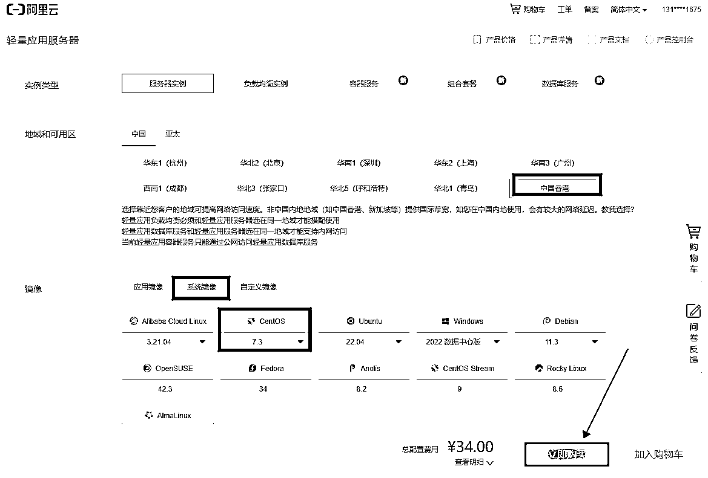
成功购买之后，重置密码。这个界面可以看到你vps服务器的公网IP地址，后面需要用到这个去链接
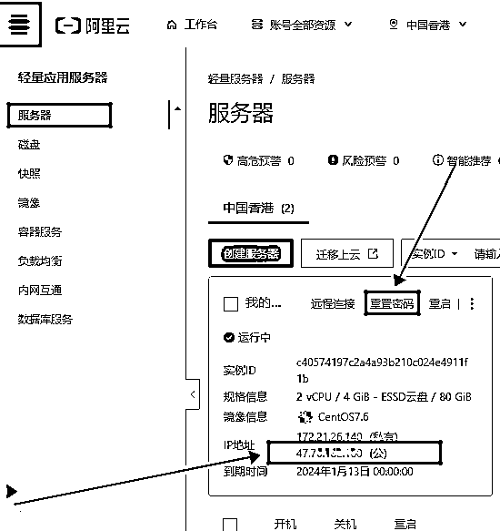
我们把vps的防火墙全部放通，以便于我们后期做测试。进入服务器的控制界面
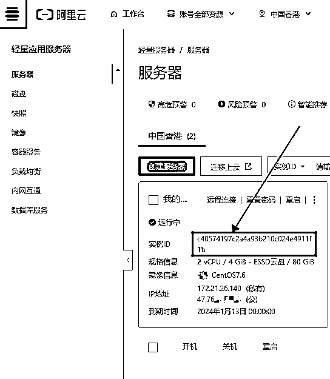
点击“防火墙”----“添加规则”
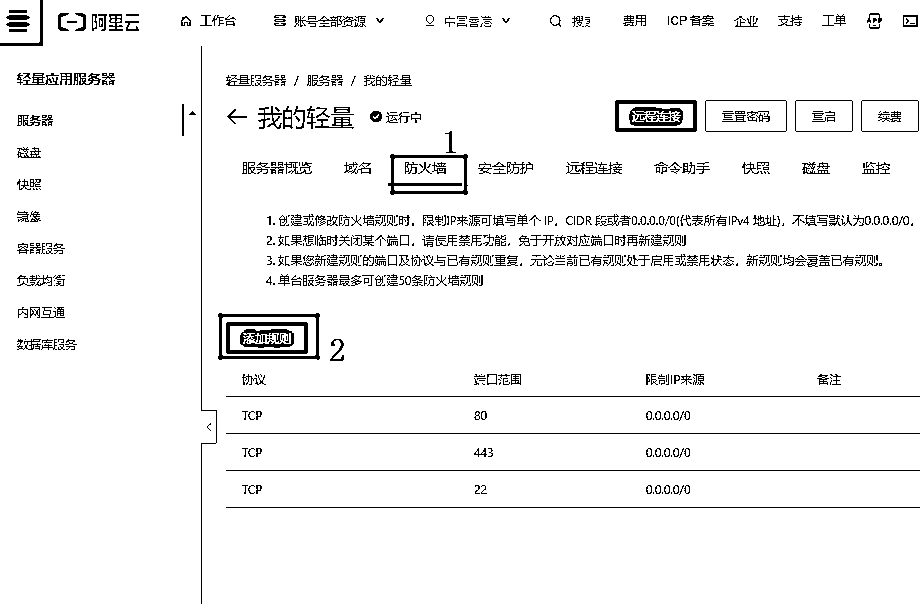
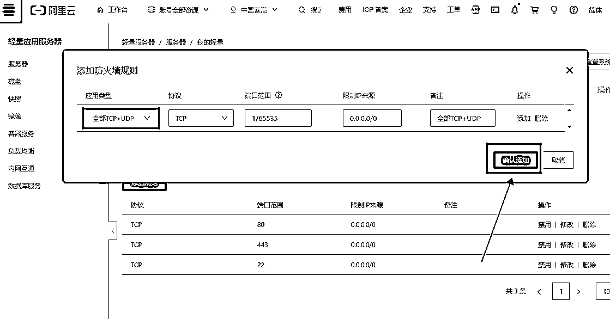
然后使用我们ssh链接工具，链接这个vps
使用Xshell，Xftp这俩种工具都安装好，链接vps我们就使用Xshell进行链接
打开Xshell，点击右上角链接
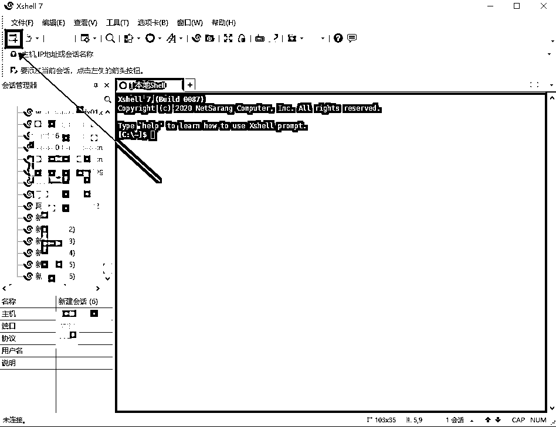
在弹出的界面，填写你服务器的ip地址和ssh端口。
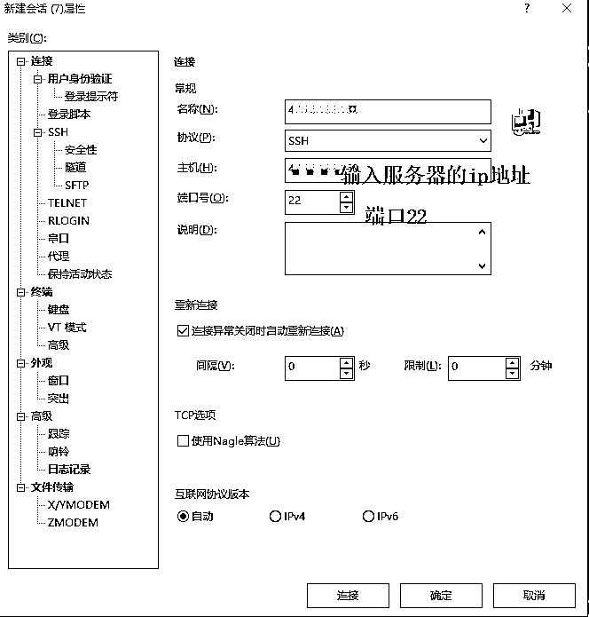
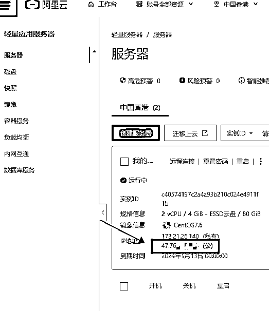
然后点击链接，输入服务器的用户名root和你刚刚重置的密码链接即可，
[root@iZj6c2jrfa4av3bcbgeyx9Z ~]# 出现大概这个样子就说明已经链接成功了
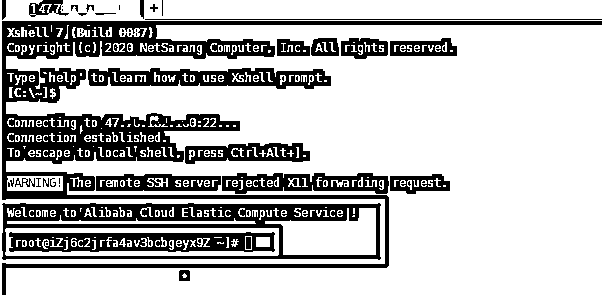
curl -fsSL https://get.docker.com -o get-docker.sh sh get-docker.sh
俩行代码一次复制到咱们的vps里面，就开始安装docker了，安装需要一点时间，等待后台自动安装即可
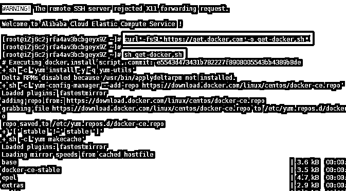
代码跑完之后出现这个状态，咱们就安装完成了
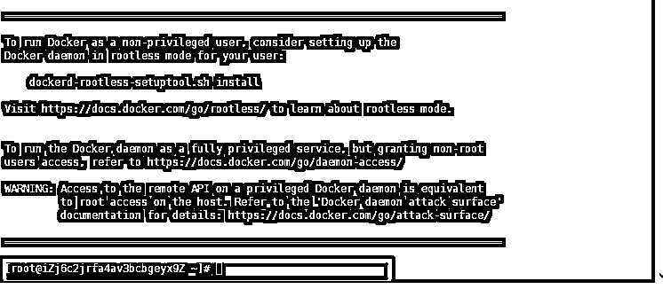
docker --version
运行docker --version查看一下docker版本，看看有没有安装成功，显示出版本，说明我们安装成功
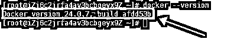
#设置docker服务开机自启动 systemctl enable docker #启动docker容器 systemctl start docker #查看docker是否运行 systemctl status docker
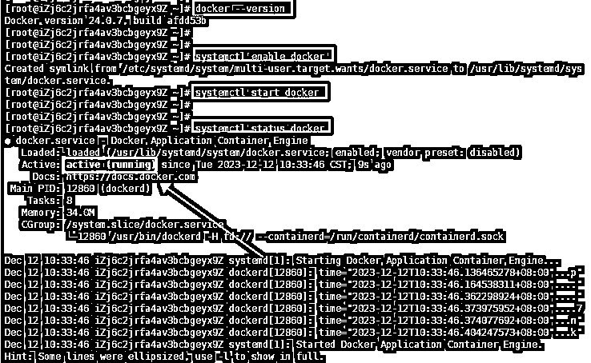
docker的active状态显示running，就说明咱们已经成功安装好docker了。
好了朋友们，下期内容，使用Docker里面搭建chatgpt